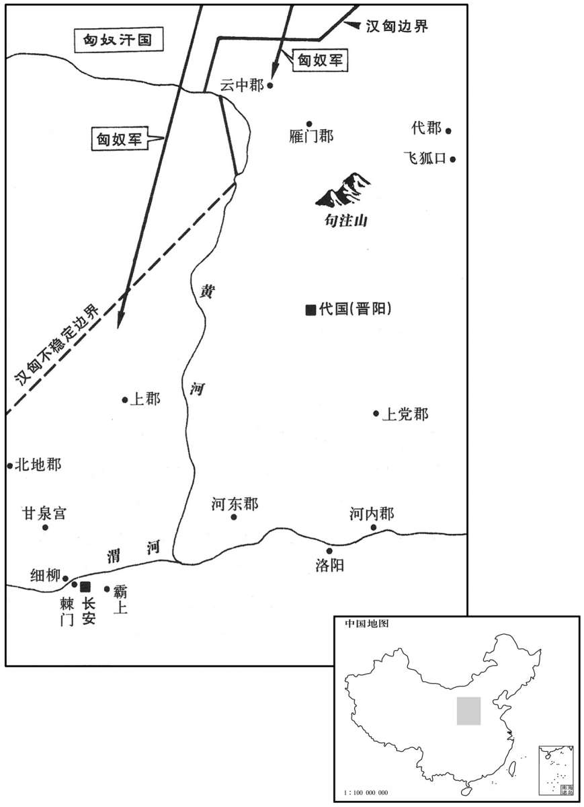

公元前158年资治通鉴：本年记事、原文与白话对照
按原书编年位置阅读；追叙和史论不等于本年发生的事件。白话采用所据译本，缺译不以生成译文补齐。
卷15 · 本年记事
公元前158年 · 汉太宗孝文皇帝后六年
六年〔（癸未、前一五八）〕
本年事件索引（现代整理）
冬，匈奴三万骑入上郡，三万骑入云中，所杀略甚众，烽火通于甘泉、长安。〔文颖曰：边方备胡寇作高土，橹上作桔槔，桔槔头兜零，以薪草置其中，常低之。有寇，即燃火举之以相告，曰烽。又多积薪，寇至即燃之，以望其烟，曰燧。〕以中大夫令免为车骑将军，屯飞狐；〔师古曰：中大夫，官名；其人姓令名免耳。此诸将军下至徐厉皆书姓，而徐广以为中大夫令是官名，此说非也。据百官表：景帝初改卫尉为中大夫令，文帝时无此官；而中大夫是郎中令属官，秩比二千石。索隐曰：据风俗通：令姓，楚令尹子文之后。虞世南曰：中大夫令是史家追书耳。〕故楚相苏意为将军，屯句注；〔句，音钩。〕将军张武屯北地；〔秦灭义渠，置北地郡。〕河内太守周亚夫为将军，次细柳；〔项羽以河内郡为殷国；高帝灭殷，复置河内郡。服虔曰：细柳在长安西北。如淳曰：长安细柳仓在渭北，近石徼。张揖曰：在昆明池南，今有柳市是也。臣瓒曰：一宿曰宿，再宿曰信，过信为次。师古曰：匈奴传云：置三将军，军长安西细柳、渭北棘门、霸上，此则细柳不在渭北，揖说是也。索隐曰：按三辅故事：细柳在直城门外阿房宫西北维。旧唐书：肃宗母元献杨后葬细柳原。〕宗正刘礼为将军，次霸上；祝兹侯徐厉为将军，次棘门；〔宗正，秦官，掌亲属；汉因之。徐厉，高祖功臣，吕后四年封祝兹侯。史记表作“松滋”。班志，松滋县属庐江郡。孟康曰：棘门在长安北，秦时宫门也。如淳曰：棘门在横门外。横门，长安城北出西头第一门。〕以备胡。上自劳军，至霸上及棘门军，直驰入，将以下骑送迎。〔劳，力到翻。将，即亮翻；下其将同。骑，奇寄翻。〕已而之细柳军，〔之，往也。〕军士吏被甲，锐兵刃，彀弓弩持满，〔被，皮义翻。彀，古候翻。〕天子先驱至，不得入。先驱曰：〔师古曰：先驱导驾，若今之武候队矣。〕“天子且至！”军门都尉曰：“将军令曰：『军中闻将军令，不闻天子之诏。』”居无何，上至，又不得入。于是上乃使使持节诏将军：“吾欲入营劳军。”亚夫乃传言“开壁门。”壁门士请车骑曰：“将军约：军中不得驰驱。”于是天子乃按辔徐行。至营，将军亚夫持兵揖曰：“介胄之士不拜，请以军礼见。”〔礼：介者不拜。见，贤遍翻。〕天子为动，改容，式车，〔为，于伪翻。〕使人称谢：“皇帝敬劳将军。”成礼而去。既出军门，群臣皆惊。上曰：“嗟乎，此真将军矣！曩者霸上、棘门军若儿戏耳，其将固可袭而虏也。至于亚夫，可得而犯耶！”称善者久之。月余，汉兵至边，匈奴亦远塞，〔远，于愿翻。〕汉兵亦罢。乃拜周亚夫为中尉。〔为以亚夫属太子张本。〕
冬季，匈奴三万骑兵入侵上郡，三万骑兵入侵云中郡，杀害和掳掠了很多军民，报警的烽火一直传到甘泉和长安城。朝廷 任命中大夫令免为车骑崐将军，率军屯守飞狐；任命原楚相苏意为将军，守句注；命将军张武屯守北地郡；命河内郡守周亚夫为将军，驻扎细柳；命宗正刘礼为将军，驻扎霸上；命祝兹侯徐厉为将军，驻扎棘门，以防备匈奴。文帝亲自犒劳军队，到达驻扎霸上和棘门的军营时，文帝一行人直接驰马进入营垒，将军和他的部属都骑着马迎送文帝出入。接着文帝到达细柳的军营，只见将士们身披铠甲，手执锋利的武器，张满弓弩。文帝的先导队伍到达，不能进入军营。先导说：“天子马上就到了！”把守军门的都尉说：“将军命令说：‘军中只听将军的号令，不听天子的诏令。’”过了一会，文帝来到，也不能进入军营。于是文帝便派使者持节诏告将军：“朕想进入军营慰劳军队。”周亚夫才传达军令说：“打开军营大门。”守卫军营大门的军官向皇帝的车马随从说：“将军有规定：在军营内不许策马奔跑。”文帝一行人便拉着马缰绳缓慢地前进。来军营中，周亚夫手执兵器对着文帝拱手作揖说：“身上穿着盔甲的武士不能下拜，请允许我以军礼参见陛下。”文帝被打动了，面容变得庄重肃穆，手扶车前的横木，向军营将士致意，并派人向周亚夫表示谦意，说：“皇帝恭敬地慰劳将军。”完成了劳军的仪式后离去。走出营门，群臣都表示惊讶。文帝说：“唉！周亚夫才是真正的将军呢！前面所经过的霸上和棘门的军队，如同儿戏罢了，那些将军很容易受到袭击而被人俘虏。至于周亚夫，谁能冒犯他呢！”文帝对周亚夫称赞了很久。过了一个多月，汉军到达边境，匈奴远远地离开了边界，汉军也就撤回来了。于是，文帝任命周亚夫为中尉。

夏，四月，大旱，蝗。〔师古曰：蝗，即螽也，食苗为灾；今俗呼为簸蝩。说文曰：一曰蝝，一曰蝗，蝗，户光翻。蝩，音钟。〕令诸侯无入贡；弛山泽，〔师古曰：弛，解也；解而不禁，与众庶同其利。〕减诸服御，损郎吏员；发仓庾以振民；〔应劭曰：水漕仓曰庾。胡公曰：在邑曰仓，在野曰庾。康曰：凡仓无屋曰庾。〕民得卖爵。
夏季，四月，大旱，出现蝗灾。文帝下令：诸侯封国停止向朝廷进贡；取消禁止百姓进入山林川泽的命令；减少御用衣服、车马等诸项开销；裁减专为皇帝服务的郎官人数；打开官府仓库救济百姓；允许百姓出卖爵位。